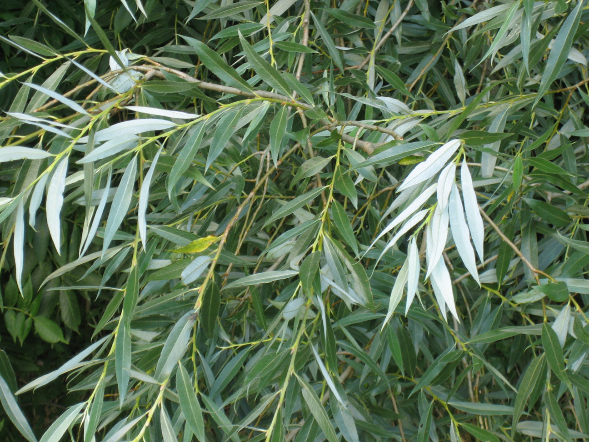
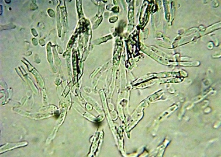
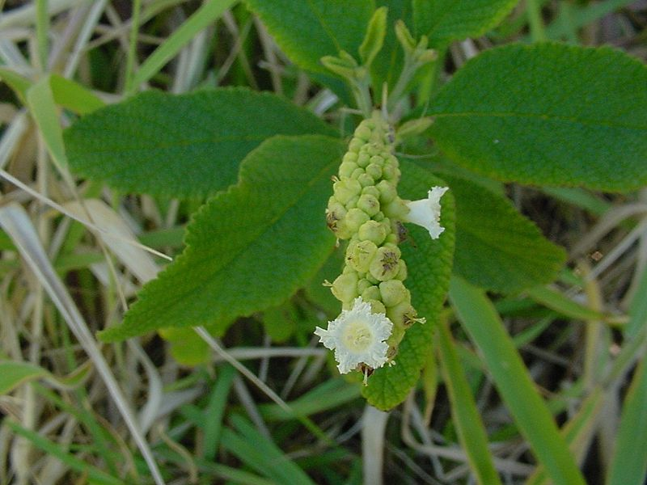
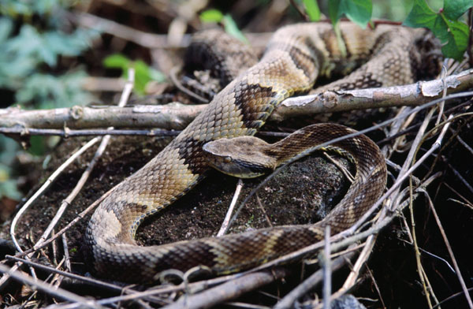

Apresentaremos, a seguir, o conceito de medicamentos da biodiversidade.
-
 Medicamentos da Biodiversidade são os que se originam da
totalidade dos genes, espécies e ecossistemas de uma região
(VILLAS BÔAS, 2013).
Medicamentos da Biodiversidade são os que se originam da
totalidade dos genes, espécies e ecossistemas de uma região
(VILLAS BÔAS, 2013).
Como exemplos de medicamentos oriundos de substâncias da biodiversidade, podemos citar a aspirina, cujo o princípio ativo é o Ácido acetilsalicílico extraído do Salgueiro (Salix alba L.) e a Penicilina (Penicillium) originária de um fungo.
 
Outros medicamentos fitoterápicos, como o Acheflan® utilizam diretamente o óleo essencial obtido da planta como princípio ativo, no caso a erva-baleeira (Cordia curassavica (Jacq.) Roem. & Schult) e o Imunomax® obtido da planta unha-de-gato (Uncaria tomentosa Willd. ex Schult. DC.) originários de vegetais. Além desses, também existem medicamentos oriundos de substâncias animais, como o Captopril, cujo princípio ativo é derivado do veneno da jararaca (Bothrops jararaca).
 
-
 Você já deve ter ouvido falar no medicamento Captopril.
Muita gente não sabe, mas este medicamento foi
desenvolvido a partir de uma substância encontrada no
veneno da jararaca brasileira (Bothrops jararaca). Este medicamento é comercializado desde os anos 70 e
ainda é o medicamento para hipertensão mais utilizado no
mundo.
Você já deve ter ouvido falar no medicamento Captopril.
Muita gente não sabe, mas este medicamento foi
desenvolvido a partir de uma substância encontrada no
veneno da jararaca brasileira (Bothrops jararaca). Este medicamento é comercializado desde os anos 70 e
ainda é o medicamento para hipertensão mais utilizado no
mundo.
Aos 31 anos, o médico recém-formado e aluno de pós-graduação no Departamento de Farmacologia da Faculdade de Medicina de Ribeirão Preto da Universidade de São Paulo, Sérgio Henrique Ferreira, juntamente com seus colaboradores, isolou, na década de 1960, do veneno da Bothrops jararaca, um princípio ativo capaz de intensificar a resposta à bradicinina e que foi denominado FPB (fator potenciador da bradicinina). A bradicina, já havia sido isolada em 1948 pelo renomado farmacologista brasileiro Maurício Rocha e Silva.
Ainda hoje, o captopril e seus derivados com ação anti-hipertensiva são exemplos de medicamentos provenientes de veneno animal sintetizado e usado com finalidade terapêutica. O Captopril converteu-se em um dos maiores sucessos da indústria farmacêutica mundial. Desde seu surgimento, diversos outros medicamentos de origem animal surgiram, a exemplo do eptifibatide e tirofiban, produzidos com base nos venenos da cascavel-anã (Sistrurus miliarius barbouri) e da víbora (Echis carinatus), respectivamente, foram aprovados no final de 1990 para tratar outras doenças cardíacas, como a angina. Leia mais sobre este caso em: USP 8 décadas de serviços – contribuições da FMRP-USP “A hipertensão sob controle”. Clique aqui
Considerando este conceito de Medicamentos da
Biodiversidade iremos dar ênfase aos medicamentos da
diversidade vegetal, assim como a diversidade
ecossistêmica.
Assista ao vídeo "O que são
Medicamentos da Biodiversidade e construção do cenário" para
compreender melhor este conceito.
É a substância que deverá exercer efeito farmacológico.
É a substância que deverá exercer efeito farmacológico.
{kind=link}
{kind=link}
{kind=link}
{kind=link}